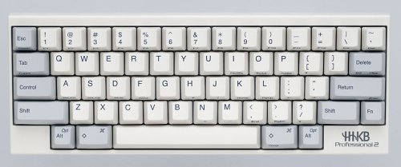
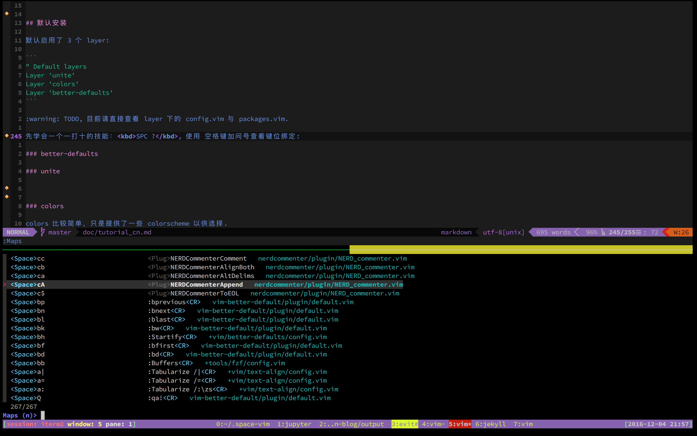
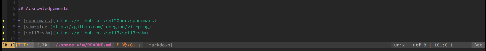

Space-vim documentation
1 前言
1.1 什么是 layer
layer, 名词有 "层次", 动词有 "分层" 的意思, 其实很简单, layer 这个概念不过是为了井然有序, 便于进一步的处理而已。就像计算机网络有应用层, 传输层等等, 每个 layer 有自己的职能。space-vim 中一个 layer 不过是针对某方面的 vim 配置与插件的集合.
在 space-vim 中, 像如下的 c-c++, graphviz, html 等等都为一个 layer. layer 的上一级目录, 比如 python layer 的上一级目录 +lang, 可称之为 topic. topic 下的内容均可认为是一个 layer.
layers ├── +lang │ ├── c-c++ │ ├── graphviz │ ├── html │ ├── markdown │ └── python ├── +themes │ ├── airline │ └── lightline ├── +tools │ ├── fzf │ └── ycmd ├── +version-control │ ├── git │ └── github ├── +vim │ ├── better-defaults │ ├── programming │ └── text-align └── LAYERS.md
一个 layer 通常由 3 个部分组成, README.md 为其简要介绍, config.vim 为针对该 layer 的配置信息, packages.vim 为支持该 layer 所需安装的一些插件.
python ├── README.md ├── config.vim └── packages.vim
| Layer Component | Description |
|---|---|
| README.md | layer 的简要介绍 |
| config.vim | 针对 layer 的配置信息 |
| packages.vim | 支持该 layer 所需的一些插件 |
1.2 为什么使用空格键作为前缀建
space-vim 的前缀键 (Leader key) 设置为空格键，取自 spacemacs. 当然了，在 spacemacs 之前就已经有很多人这么设置了, 它不是第一个，但是它的流行影响了很多人对 Leader key 的设置。
spacemacs 除了外观漂亮，社区驱动等等优点，主打 evil 并用空格键作为其前缀键可能也是其中一个成功的卖点，因为真的可以减轻手指负担，毕竟 "触手可及".
let g:mapleader="\<Space>"
从现代键盘设计的角度看，空格键理应受到优待, 毕竟一个人在 “VIP” 区占了好几个位. 即使 HHKB 这样的神器，也有空格键的一席之地.

Figure 1: HHKB keyboard
1.3 为什么使用 hjkl 作为方向键
关于 vim 自身的键位设定，刚开始时可能会觉得很奇怪, 为什么要用这几个键作为方向键呢? 这是因为以前的键盘长这样:

Figure 2: Lear Siegler's ADM-3A computer terminal's full keyboard

看到这个，也就应该能够理解为什么 vim 使用 hjkl 作为方向键，因为物理条件就是这样, 没得选. 参见 why-vim-uses-hjkl-as-arrow-keys .
2 运行截图

Figure 4: python
以上截图可能并非最新版本，仅供参考。
3 适用人群
- vim 初学者. 如果是老司机, 选择感兴趣的部分看看就好.
- 同时使用 vim 与 spacemacs, 并且希望 vim 不那么 “寒碜”。
- 惯用 Terminal vim, 而不是 GUI vim.
虽然大部分设置 terminal 与 GUI 通用, 但因为我基本不使用 GUI vim, 所以仍然会有些设置可能对 GUI vim 不那么友好. 不过非常欢迎您帮助改进 GUI vim 下的一些潜在问题.
4 开始使用
4.1 安装工作
又想马儿跑，又要马儿不吃草，那是不太现实的，所以要想要 space-vim 的体验好一些，一些准备工作必不可少.
4.1.1 满足 “要求” 的 vim
所谓要求，是指有些插件需要 vim 在编译时必须包含某项特性 (feature)，比如 ycmd layer 中使用的 YouCompleteMe 要求 vim 得有 python 支持。如果使用 NeoVim 可以直接跳过这一节, 因为 NeoVim 默认编译时包含全部特性.
terminal 中输入 vim --version, 可以看到一串信息，下面显示的是我使用 brew 安装的 vim, 带 "+" 说明该 feature 有了， 带 "-" 说明没有，比如下面的 +python3 说明支持 python3. 安装时还是保险一点，什么 lua, python , clipboard都装上, 以免后患。
$ vim --version VIM - Vi IMproved 8.0 (2016 Sep 12, compiled Nov 21 2016 17:35:16) MacOS X (unix) version Included patches: 1-94 Compiled by Homebrew Huge version without GUI. Features included (+) or not (-): +acl +file_in_path +mouse_sgr +tag_old_static +arabic +find_in_path -mouse_sysmouse -tag_any_white +autocmd +float +mouse_urxvt -tcl -balloon_eval +folding +mouse_xterm +termguicolors -browse -footer +multi_byte +terminfo ++builtin_terms +fork() +multi_lang +termresponse +byte_offset -gettext -mzscheme +textobjects +channel -hangul_input +netbeans_intg +timers +cindent +iconv +num64 +title -clientserver +insert_expand +packages -toolbar +clipboard +job +path_extra +user_commands +cmdline_compl +jumplist +perl +vertsplit +cmdline_hist +keymap +persistent_undo +virtualedit +cmdline_info +lambda +postscript +visual +comments +langmap +printer +visualextra +conceal +libcall +profile +viminfo +cryptv +linebreak -python +vreplace +cscope +lispindent +python3 +wildignore +cursorbind +listcmds +quickfix +wildmenu +cursorshape +localmap +reltime +windows +dialog_con +lua +rightleft +writebackup +diff +menu +ruby -X11 +digraphs +mksession +scrollbind -xfontset -dnd +modify_fname +signs -xim -ebcdic +mouse +smartindent -xpm +emacs_tags -mouseshape +startuptime -xsmp +eval +mouse_dec +statusline -xterm_clipboard +ex_extra -mouse_gpm -sun_workshop -xterm_save +extra_search -mouse_jsbterm +syntax +farsi +mouse_netterm +tag_binary system vimrc file: "$VIM/vimrc" user vimrc file: "$HOME/.vimrc" 2nd user vimrc file: "~/.vim/vimrc" user exrc file: "$HOME/.exrc" defaults file: "$VIMRUNTIME/defaults.vim" fall-back for $VIM: "/usr/local/share/vim" Compilation: clang -c -I. -Iproto -DHAVE_CONFIG_H -DMACOS_X_UNIX -g -O2 -U_FORTIFY_SOURCE -D_FORTIFY_SOURCE=1 Linking: clang -L. -L/usr/local/lib -L/usr/local/lib -o vim -lm -lncurses -liconv -framework Cocoa -L/usr/local/lib -llua -fstack-protector -L/System/Library/Perl/5.18/darwin-thread-multi-2level/CORE -lperl -L/usr/local/opt/python3/Frameworks/Python.framework/Versions/3.5/lib/python3.5/config-3.5m -lpython3.5m -framework CoreFoundation -lruby.2.0.0 -lobjc
macOS 下使用 brew 安装 vim 非常方便, 其他平台下可以自行搜索更多内容, 网络上有很多指引.
4.1.2 第三方工具
比如语法检查时用到的各种 linter, python 代码格式化时用到的 yapf。具体这些工具如何安装，在需要时自行安装即可。
4.1.3 安装字体
要想界面漂亮，字体可能也是不可或缺, 况且安装也不是很复杂。
对于 airline layer 中使用的 vim-airline 最好搭配 powerline fonts 字体， space-vim 默认不使用. 推荐安装:
$ git clone https://github.com/powerline/fonts.git ~/.fonts $ sh ~/.fonts/install.sh
powerline font 安装完成后，在 .spacevim 中启用字体：
let g:airline_powerline_fonts=1
4.1.4 字体设置
GUI 环境下, 可直接在 vim 的配置文件进行设置.
终端环境下 vim 的字体服从于 terminal 的字体设置，因此安装完成后, 需要在 terminal 的字体设置中启用带有 for powerline 样式的字体，否则在启用 airline 时可能会出现状态栏乱码. 下图为 iterm2 中的字体设置：

Figure 5: iterm2 font setting
4.2 启用已有 layer / 禁用部分插件
启用 layer 非常简单，使用一键安装脚本安装 space-vim 时会自动在当前用户目录下生成一个 .spacevim ，可在其中的 Layers() 部分进行启用已有的 layer, 也可以在里面放置 space-vim 没有的插件：
每个 layer 下，通常附有一个 README 以简要说明，请在启用该 layer 时进行查阅 。
使用 Layer 命令可以加载 layer, 但是如果不想加载 layer 中的所有插件, 可以使用 Exclude 命令进行部分禁用, 比如不想要 'Shougo/denite.nvim':
function! Layers() Layer 'fzf' Layer 'unite' Layer 'better-defaults' Layer 'python' Exclude 'Shougo/denite.nvim' endfunction
注意，如果是首次启用一个 layer，需要执行 SPC f R, 或者 :so $MYVIMRC, 重新加载 .vimrc 并执行 :PlugInstall 安装所需的相关插件 。或者退出重新打开 vim, vim-plug 将会检测并自动安装缺失的插件。
4.3 添加个性化插件
UserInit() 可以放置个人私有的一些插件。
function! UserInit() Plug 'extr0py/oni' endfunction
4.4 覆盖已有配置信息
.spacevim 中有个 UserConfig() ，可以将一些个性化配置放在这里, 对已有的一些配置信息进行覆盖。比如想换个主题, 自定义一些快捷键等：
function! UserConfig() color molokai nnoremap Q :qa!<CR> endfunction
如果个性化配置比较多，也可以放在 private 目录下。private 可看做是一个 layer, 里面可以有 config.vim 与 packages.vim 这两个文件。如果这两个文件存在，space-vim 也会在启动时进行加载。
5 更新
对于 vim 插件的更新，自然是通过插件管理器 vim-plug 提供的相关命令 :PlugUpdate 。
对于 space-vim , 可以进入 path/to/.space-vim 执行 git pull origin master 。
$ git pull origin master
6 默认安装
.spacevim 默认启用了 3 个 layer:
Layer 'fzf' Layer 'unite' Layer 'better-defaults'
一个尽快上手最重要的快捷键: SPC ? , 使用空格键加问号查看现有的键位绑定, 打开后可使用 Ctrl j, Ctrl k 进行上下选择, Ctrl c 退出, 也可直接输入进行模糊查找:

Figure 6: SPC ? key maps
从图中可以看到键位映射，比如挑一个 <Space> b p, 后面跟着该快捷键对应的命令 :bprevious<CR>, 意为 buffer previous, 即跳转前一个 buffer. 后面还跟着定义该快捷键的文件, 来自 vim-better-default/plugin/default.vim 。不熟悉时，可以将快捷键都看一下。
SPC ? 实际映射的命令是 fzf.vim 的 :Maps, 因此 fzf layer 实际是为了支持 unite layer. 不过其中安装的 fzf 除了可在 vim 中，也可在 terminal 中使用, 非常值得了解。
更多内容请直接查看各 layer 下的 README. 如果 README 有问题，还是直接查看其中的 config.vim 与 packages.vim, 不要害怕，这些内容都很简单，跟平常的 vimrc 并没有什么两样。
6.1 better-defaults
一些 “人性化” 设置和基本的键位映射，包括 buffer, window, esay-motion 快速移动等操作。了解 better-defaults 下面的键位设置非常重要，因为这些是所有快捷键设定的重要组成部分.
6.2 unite
unite layer 主要希望提供一个界面来选择一些不太常用或稍复杂的命令.
7 基础键位
7.1 Basic
insert mode 与 command mode 的快捷键大都由 rsi.vim 支持, :h rsi 查看其完整文档。 它是一种类似 Emacs 的键位绑定，这种设定在很多地方都是默认配置，比如 bash.
| Key Binding | Mode | Description |
|---|---|---|
SPC q |
Normal | q uit, 退出 |
SPC Q |
Normal | quit without saving, 不保存强制退出 |
SPC d |
Normal | go d own half page, 向下移动半屏 |
SPC u |
Normal | go u p half page, 向上移动半屏 |
SPC s c |
Normal | s earch result highlight c ountermand, 取消搜索结果高亮 |
SPC t p |
Normal | t oggle p astemode, 粘贴模式开关 |
U |
Normal | redo, 重做(对应 u 为撤销，undo) |
H |
Normal | beginning of line, 光标跳转到行首 |
L |
Normal | end of line, 光标跳转到行尾 |
Y |
Normal | yank from cursor to end of line, 从光标处复制到行尾 |
; |
Normal | :, 快速进入 command mode |
SPC f s |
Normal | f ile s ave, 保存文件 |
SPC f [1-9] |
Normal | f old level, 设置折叠层次，f 0 相当于全部折叠, f 9 相当于取消折叠全部展开 |
Ctrl j |
Insert | j, 向下移动 |
Ctrl k |
Insert | k, 向上移动 |
Ctrl h |
Insert | h, 向左移动 |
Ctrl l |
Insert | l, 向右移动 |
jj |
Insert | \<Esc> |
jk |
Insert | \<Esc> |
kk |
Insert | \<Esc> |
Ctrl h |
Command | <left> |
Ctrl j |
Command | <down>, next command, 下一条历史命令 |
Ctrl k |
Command | <up>, previous command, 上一条历史命令 |
Ctrl l |
Command | <right> |
Ctrl a |
Insert, Command | <home>, 行首 |
Ctrl e |
Insert, Command | <end>, 行尾 |
Ctrl d |
Insert, Command | <delete>, 删除 |
Ctrl g |
Command | <esc>, return to nomral mode from command mode |
Ctrl f |
Insert, Command | f orward, move forward one character |
Ctrl b |
Insert, Command | b ackward, move backward one character |
v |
Visual | <Esc> |
7.2 Tab
| Key Binding | Mode | Description |
|---|---|---|
<Ctrl-Tab> |
Normal, Insert | next tab |
<Alt-Tab> |
Normal, Insert | previous tab |
tabline 显示的信息示例: T-2:1/3W, T-当前 tab 编号:当前光标所在 Window 的编号/该 tab 所有的 window 总数.
7.3 Buffer
| Key Binding | Mode | Description |
|---|---|---|
SPC b [1-9] |
Normal | switch to buffer with number [1-9], 切换至对应编号[1-9]对应缓冲区 |
SPC b p |
Normal | p revious b uffer, 上一个缓冲区 |
SPC b n |
Normal | n ext b uffer, 下一个缓冲区 |
<Tab> |
Normal | next buffer, equal to SPC b n, 等同于 SPC b n |
<Shift-Tab> |
Normal | previous buffer, equal to SPC b p, 等同于 SPC b p |
SPC b d |
Normal | d elete current buffer, 删除当前缓冲区 |
SPC b k |
Normal | k ill current buffer, 杀掉当前缓冲区 |
7.4 Window
| Key Binding | Mode | Description |
|---|---|---|
SPC w j |
Normal | window-down, 移动至下方窗口 |
SPC w k |
Normal | window-up, 移动至上方窗口 |
SPC w h |
Normal | window-left, 移动至左侧窗口 |
SPC w l |
Normal | window-right, 移动至右侧窗口 |
SPC w J |
Normal | 向下扩大当前窗口 |
SPC w K |
Normal | 向上扩大当前窗口 |
SPC w H |
Normal | 向右扩大当前窗口 |
SPC w L |
Normal | 向左扩大当前窗口 |
SPC w v |
Normal | split-window-right, 竖直分割窗口 |
SPC w 2 |
Normal | layout-double-columns, 将窗口分割为两列，等同于 SPC w v |
SPC w s |
Normal | split-window-below, 水平分割窗口， 等同于 SPC w - |
SPC w d |
Normal | delete-window, 关闭 (cancel, 记 d elete) 当前窗口 |
SPC w q |
Normal | quit-window, 退出 (q uit) 当前窗口，若是最后一个窗口则退出vim |
SPC w w |
Normal | other-window, 在所有窗口中循环移动 |
SPC w r |
Normal | window-replace, 向右或向下方交换 (r eplace) 窗口 |
SPC w m |
Normal | GUI 环境下 vim 窗口最大化 (m aximum) 开关 |
7.5 easy-motion
| Key Binding | Mode | Description |
|---|---|---|
SPC j w |
Nomral | 单词跳转 (jump to word) |
SPC j l |
Nomral | 行间跳转 (jump to line) |
SPC j j |
Nomral | goto-char, 单个字符搜索, 等同于 SPC SPC s |
SPC j J |
Nomral | goto-char-2, 两个字符搜索 |
SPC SPC w |
Normal | 快速词间移动(向前) |
SPC SPC b |
Normal | 快速词间移动 (向后) |
SPC SPC s |
Normal | 快速字符搜索 (双向) |
SPC SPC f |
Normal | 快速字符搜索 (向前) |
SPC SPC j |
Normal | 快速行间移动 (向下) |
SPC SPC k |
Normal | 快速行间移动 (向上) |
7.6 Others
| Key Binding | Mode | Description |
|---|---|---|
SPC b h |
Normal | b uffer h ome, 主 buffer |
SPC f f |
Normal | f ile s earch, 使用 fzf 搜索当前用户目录下的文件 (terminal vim) |
SPC f ? |
Normal | f ile search, 使用 fzf 搜索当前工作目录下的文件 (terminal vim) |
SPC f R |
Normal | reload .vimrc, 重新加载 .vimrc (f ile R esource) |
SPC f r |
Normal | f ile used r ecently, 最近使用的文件 |
SPC f t |
Normal | f ilet/ oggle, NERDTree toggle, 打开 NERDTree |
SPC x d |
Normal | delete trailing whitespace, 去掉行尾多余空格 (te x t d elete) |
8 使用建议
8.1 启动时间
当启用很多 layer 时, 意味着加载了很多插件与配置信息, 很可能会导致 vim 启动时变慢, 这是我们不愿意看到的.
从 vim-startuptime-benchmark 可以看出, 即使使用很多插件仍然可以保持很快的启动 ( 200 ms 以内). 尽管加载的插件不尽相同, 但仍具有借鉴意义. 这里 也有一篇关于 vim 启动优化非常好的文章。
虽然有些使用插件延迟加载, 但有一段时间 space-vim 启用很多 layer 时, 启动时间普遍超过 500 ms, 有时甚至会超过 900 ms. 测试环境:
- Retina 13-inch mid 2014
VIM - Vi IMproved 8.0 (2016 Sep 12, compiled Nov 21 2016 17:35:16).
vim --startuptime vim.log会将启动时的一些时间, 加载的文件等情况写入到 vim.log 中, 大家可以自行测试一下.
虽然比起 spacemacs 几秒钟的启动时间, 几百毫秒已经很快. 但对于 vim, 启动迅速是硬性要求, 而且当超过 900 ms 时, 就会有明显的 lag. 后来在这里找到了暂时的解决方案: load-plugins-manually , 主要是 YouCompleteMe 与 ultisnips 两个插件.
下面是我一般会启用的 layer, 其中 airline 我已经默认不启用了, 因为可能会它可能会导致 100 ms 的启动延迟, 默认的 statusline 已经够用了, 我会在接下来介绍它。
function! Layers() Layer 'emoji' Layer 'goyo' Layer 'html' Layer 'c-c++' Layer 'python' Layer 'markdown' Layer 'graphviz' Layer 'airline' Layer 'chinese' Layer 'text-align' Layer 'programming' Layer 'ycmd' Layer 'syntax-checking' endfunction
8.2 space-vim statusline
 Terminal vim 默认的 statuline 显示的信息依次为:
buffer 编号 ❖ window 编号 [TOT: buffer 总数] 文件大小 文件名 fugitive/ale 信息 [文件类型] 文件编码 | 编码类型 | 行号:列号-虚拟列号 位置信息
GUI vim 由于渲染的原因，有些 unicode 字符无法正常显示, 因此去掉了 unicode 字符。
[buffer-编号] [window-编号] [TOT: buffer 总数] 文件大小 文件名 fugitive/ale 信息 [文件类型] 文件编码 | 编码类型 | 行号:列号-虚拟列号 位置信息
通过 statuline 的 window-编号, 可以使用 SPC 编号 切换到对应的 window. 通过 [TOT: buffer 总数], 可以知道当前共有几个 buffer, 使用 Tab 与 Shift-Tab 进行前后的 buffer 切换.
如果启用 airline Layer, 默认的 SPC [1-9] 快捷键可能不是那么人性化， 可以参考 这里 重新进行覆盖设置.
9 后记
space-vim 仅仅是一个起点，在不断使用 vim 的过程中，每个人都会不断总结出适合自己的套路。开始不仅仅 "手中有剑", 而是 "心中有剑", 到这时你便完全可以打造一个独属于自己的配置。 为什么要有一个自己的配置？ Because you can and you love it.
学习从模仿开始, 而且要从模仿最好的开始. 我在学习与使用 vim 的过程中也向别人偷师了很多内容, 同样, 如果在此过程中，space-vim 能够发挥些许作用，也算功德圆满。
在使用 space-vim 的过程中，如果您能分享一些更好的解决方案，或是改进一些不合理之处，欢迎之至。
vim 只不过是工具, 你用记事本写程序都可以, 我们最终要做的是解决问题, 切莫舍本逐末, 一味地追求工具的打磨.